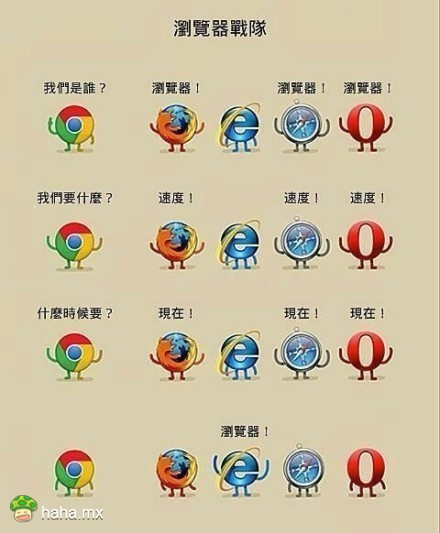

-
操作系统：Windows 95
发布日期： 1999 年 3 月
-
操作系统： Windows XP
发布日期： 2001 年 8 月
-
操作系统： Windows 7
发布日期： 2009 年 3 月
-
操作系统： Windows 7
发布日期： 2011 年 3 月
-
操作系统： Windows 8
发布日期： 2012 年 9 月
-
操作系统： Windows 8.1
发布日期： 2013 年 10 月
